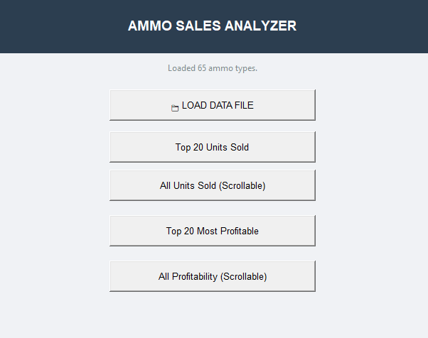

Technical Projects
Explore my featured engineering modeling, spatial analysis, and software automation work.

Fire Station Service Area Audit & Infrastructure Plan
Tools: ArcGIS Pro, Cost-Weighted Distance Modeling, NFPA 1710 Standards
Evaluated municipal emergency response coverage across a 340,701-cell road network in Chesapeake, VA. Developed a strategic expansion plan adding 8 satellite stations, increasing compliant coverage from 83% to 93.09%.

High-Ticket Asset Inventory Pipeline & Revenue Dashboard
Tools: Python (Pandas, Matplotlib, Tkinter), Openpyxl
Engineered an object-oriented desktop application that automatically parses complex Point-of-Sale (POS) category block exports, cleans currency strings, and renders dynamic business intelligence graphs with 100% mathematical reconciliation.